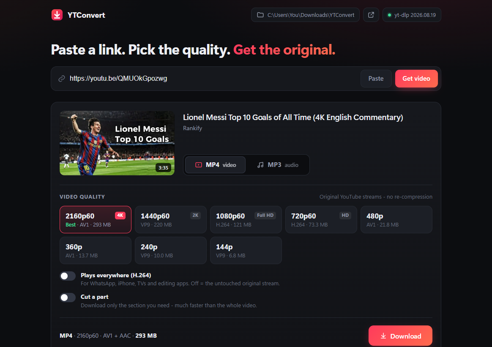
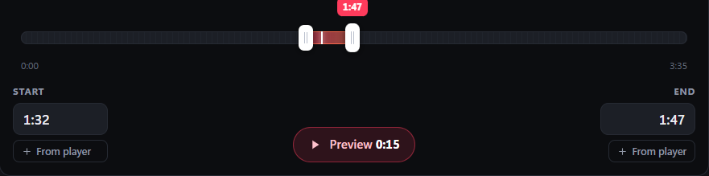

Paste a link, pick 4K, 1080p or a 320 kbps MP3 - or cut out just the part you want. YTConvert saves it straight to your computer. Free, no ads, no limits.
Windows 10 & 11 · macOS 11 or newer · free
· Intel Mac

New · Cut a part
Only need 15 seconds? Get only 15 seconds.
No more downloading a whole hour to keep one goal, one verse or one quote. YTConvert downloads just the part you mark - so it's done in seconds.
Switch on Cut a part under the quality options.
Drag the two handles or type the start and end - watch the preview to find the exact moment.
Press Download. Works for MP4 and MP3, cut to the exact frame.

How to install
DownloadClick Download for Windows. You get YTConvert-Setup.zip (14 MB).
Extract & openRight-click the zip, choose Extract All…, then open YTConvert Setup.
Click InstallIt sets everything up in about a minute and adds a desktop shortcut. No admin rights needed.
What you get
Up to 4K at 60 fps - every resolution the video was uploaded in, with the exact file size shown first.
No re-compression - the best stream YouTube has is packed into an MP4 as-is.
MP3 up to 320 kbps with the thumbnail as cover art and the title in the tags.
Cut just the part you need - preview, drag two handles, and only that part is downloaded. Frame-exact.
Plays-everywhere mode - one switch makes an H.264 file for WhatsApp, iPhone and TVs.
Runs on your PC - no account, no tracking, nothing is uploaded.
Several downloads at once with live speed, time left and cancel.
Questions
Why is the Windows download a zip?
So your browser and Windows can trust every file in it. Everything that runs is signed by the Python Software Foundation or Microsoft, so there's no "suspicious download" warning. The installer then fetches the video engine (FFmpeg) itself and checks its fingerprint.
How do I install it on a Mac?
Open the downloaded .dmg and drag YTConvert into Applications. The first time you open it, macOS says it can't verify the developer, because the app isn't registered with Apple. Open System Settings › Privacy & Security, scroll down and click Open Anyway. You only do this once. M1–M4 Macs use the main Mac download; older Intel Macs use the Intel version.
How do I uninstall it?
Windows Settings, then Apps, then YTConvert, then Uninstall. Your downloaded videos stay where they are.
A video says #4k but I only see 1080p.
YTConvert lists exactly what YouTube stores for that video. If the uploader only uploaded 1080p, there is no 4K version. The app tells you when that's the case.
Downloads suddenly stopped working.
YouTube changes things from time to time. Click the green engine button at the top right of the app to update, then reopen YTConvert.
What can't it download?
Private, members-only and age-restricted videos, live streams while they're live, and whole playlists. Paste one video link at a time.